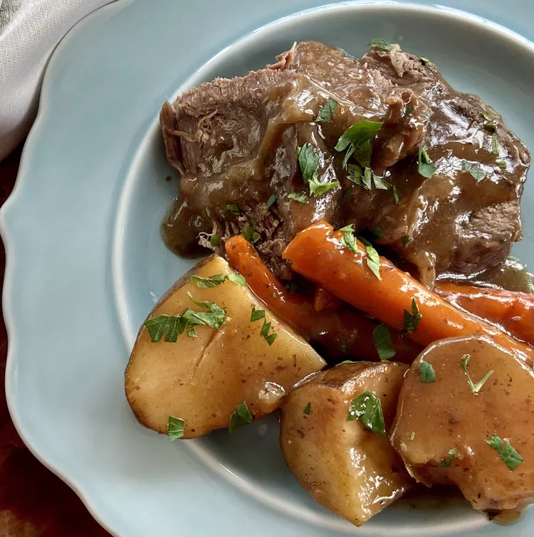

Pot Roast (2)
- 2 lb chuck
- 2 springs Rosemary
- Chicken stock or water to cover
- Salt and Pepper
- Flour
Directions:
- Generously Salt and pepper meat.
- Coat in Flour.
- Hard sear on medium high heat to brown meat.
- Simmer with herbs in stock or water
[1 hr + 1/2 hr for each 1 lb of meat.]